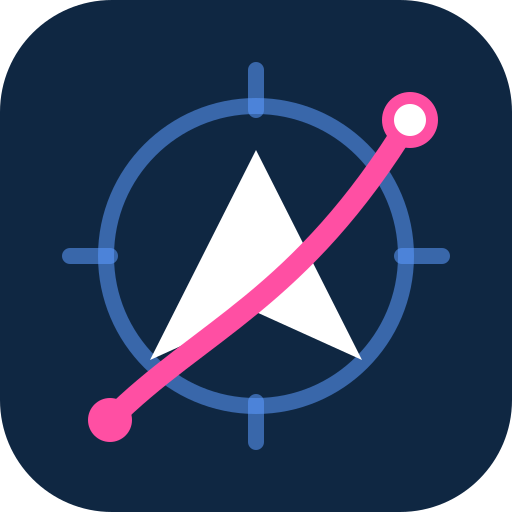

AeroNav
Flugvorbereitung für VFR-Piloten im Verein
Zugang auf diesem Gerät
„Zugang entfernen“ löscht den Schlüssel und die entschlüsselte App auf diesem Gerät. Deine Routen und Notizen bleiben im Browser.
Planungshilfe – keine zugelassene Navigationsquelle. Verbindlich sind AIP, ICAO-Karte, NOTAM, amtliches Flugwetter (DWD) und das Flughandbuch. Die Verantwortung für den Flug liegt beim verantwortlichen Piloten.
Impressum
Datenschutz
Diese Seite liegt bei GitHub Pages (GitHub, Inc.). Beim Aufruf verarbeitet GitHub technisch notwendige Daten wie deine IP-Adresse, um die Seite auszuliefern.
AeroNav hat keine Benutzerkonten, kein Tracking und keine Cookies. Der Zugangscode wird nur in deinem Browser zum Entschlüsseln benutzt und nicht übertragen. Auf dem Gerät gespeichert werden der daraus abgeleitete Schlüssel und die entschlüsselte App, bis du den Zugang entfernst.
In der App selbst stehen unter „Mehr“ die Verbindungen, die dein Browser für Wetter, Höhenwind, Geländehöhe und die OpenStreetMap-Karte aufbaut.